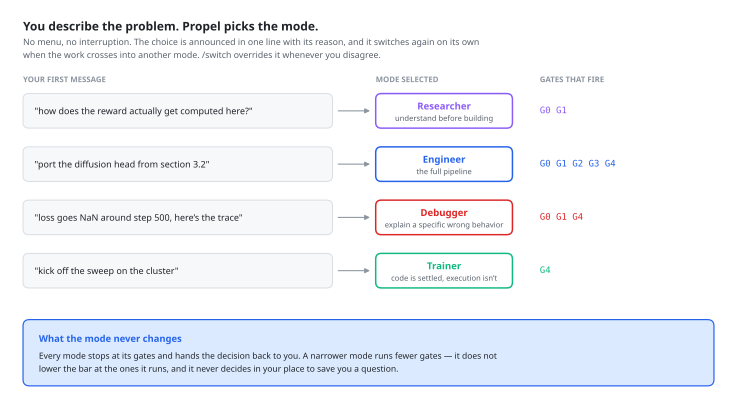

Mode System
Not every session needs the full pipeline. Modes filter which skills, gates, and auditors are active — so you get exactly the workflow you need.
Why Modes Exist
The full Propel pipeline has five gates, two questioner checkpoints, a dozen skills, and eight auditor agents. That is the right amount of structure when you are building a new paper-derived component from scratch. But it is far too much when you just need to launch a training run or track down a NaN.
Modes solve this by filtering the pipeline down to what the current task actually requires. A Researcher does not need implementation gates. A Trainer does not need design reviews. A Debugger needs investigation and diagnosis, but not the full design-implement-validate cycle. Each mode activates only the phases, gates, and skills that match the work.
Modes are filters, not silos. The underlying skills and gates are the same across all modes — modes just control which ones are active. You can switch modes at any time without losing context.
Mode Selection Is Automatic
You do not choose the mode. Propel reads your first substantive message, infers the mode, announces the choice in one line with its reason, writes .propel/mode.json, and gets to work — all in the same turn.

| The first message looks like | Mode | Because |
|---|---|---|
| "how does X work", "survey", "what approaches exist", "read this paper" | Researcher | The question is about the problem space, not the code |
| "implement", "add", "build", "port this paper", "refactor" | Engineer | There is something to build; the full pipeline applies |
| "it's broken", "NaN", "wrong output", "this used to work", a traceback | Debugger | There is a specific wrong behavior to explain |
| "train", "launch the run", "it crashed on the cluster", "OOM" | Trainer | The code is settled; the problem is execution |
| Genuinely ambiguous, or an empty repo with no task | Engineer | The superset — nothing gets filtered out by mistake |
It also switches mid-session, on its own, when the work crosses a boundary:
That's a runtime failure rather than a logic change — switching to Trainer Mode to get the run up, and I'll flag anything that turns out to be logic.
The one case where it stops and asks instead of switching: when the new work would discard work in flight — a half-implemented approved plan, an investigation mid-trace. Then it names the conflict and lets you choose which thread to keep.
/intro, ask which modes exist, or explicitly ask to choose. It is available; it is not the front door.
Overriding the Choice
There are two ways to select a mode:
At Session Start: /intro
When you start a new session, the /intro command presents all four modes and asks you to choose. If no mode is selected and you just describe a task, Propel defaults to Engineer Mode (the full pipeline).
Anytime: /switch
Switch modes at any point during a session with the /switch command:
/switch researcher
/switch engineer
/switch debugger
/switch trainer
The switch takes effect immediately — no /clear needed. The using-propel skill reads the updated mode file and routes accordingly.
Mode State Persistence
The current mode is stored in .propel/mode.json:
{
"mode": "engineer",
"switched_at": "2026-09-19T14:30:00Z",
"previous_mode": "researcher",
"selected_by": "auto"
}
selected_by distinguishes an inferred mode from one you chose. An auto mode can be switched away from freely, with a one-line notice. A user mode is a statement of intent — Propel prefers to ask before auto-switching away from it.
This file survives /clear. When the session-start hook fires (on every session start, resume, and compaction), it reads .propel/mode.json and injects the current mode into Claude's context. Your mode choice persists across context resets.
If .propel/mode.json does not exist, the hook sets "mode_selection_needed": true, and Claude infers the mode from your first message rather than presenting a menu. A second hook (route.sh, on UserPromptSubmit) re-states the active mode every turn, so the routing doesn't quietly decay as the session fills up.
Mode Comparison
| Property | Researcher | Engineer | Debugger | Trainer |
|---|---|---|---|---|
| Active Gates | G0 G1 | G0 Q0 G1 Q1 G2 G3 G4 | G0 G1 G4 | G4 (runtime only) |
| Key Skills | investigation, deep-research, paper-extraction, think-deeply, retrospective, context-hygiene | All skills active | investigation, systematic-debugging, deep-research, think-deeply, verification-before-completion | trainer-mode, systematic-debugging (runtime only), context-hygiene |
| Use Case | Literature reviews, understanding a domain, processing papers | Full development: design, implement, validate, debug | Root-cause analysis, evidence-backed diagnosis | Launch training, fix runtime errors, monitor runs |
| Does NOT | Implement code, create designs, launch training | (no restrictions) | Build new features, create design plans, launch training | Change logic, modify architecture, add features |
Pipeline Phase Activation
Each mode activates different phases of the Propel pipeline. The diagram below shows which phases are active (filled) and inactive (empty) in each mode:
Researcher Engineer Debugger Trainer
---------- -------- -------- -------
Gate 0 Intake [========] [========] [========]
Q0 Grounding [========] [========]
Investigation[========] [========] [========]
Gate 1 Post-Invest.[========] [========] [========]
Q1 Details [========]
Design [========]
Gate 2 Post-Design [========]
Implementation [========]
Gate 3 Mid-Impl. [========] classify
Validation [========] evidence
Training [========] [========]
Debugging [========] [========]
Gate 4 Post-Debug [========] [========] (runtime)
Retrospective [========] [========] [========] [========]Out-of-Scope Handling — switch, don't refuse
When a request does not match the current mode, Propel does not silently fail or attempt the work anyway. Instead, it names the mismatch and suggests the correct mode:
| Situation | Current Mode | Response |
|---|---|---|
| User asks for code implementation | Researcher | "That's an implementation task. Switch to Engineer Mode with /switch engineer to get the full design-implement-validate workflow." |
| User asks to build a new feature | Debugger | "That's a new feature, not a bug fix. Switch to Engineer Mode with /switch engineer." |
| User asks to launch training | Debugger | "That's a training task. Switch to Trainer Mode with /switch trainer." |
| User asks for architecture changes | Trainer | "That's a logic change, not a runtime bug. Switch to Engineer Mode with /switch engineer." |
| User asks for literature review | Trainer | "That's a research task. Switch to Researcher Mode with /switch researcher." |
If you are unsure which mode to use, just describe what you want to do when starting a session. The /intro command will suggest the right mode based on your description.